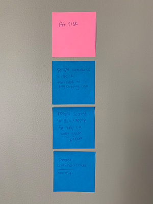

Audience and Goals
After researching different aspects around Preemies of the Carolinas, I developed goals for each of the audiences I identified earlier.
Audience
To define our Audience, we did an exercise where we brainstormed all the possible users of the website and then organized them into user groups. This would help us organize people groups and determine goals later on.

This is the product of my brainstorm. My user groups were broken down to groups who need help, give help, and groups that are at risk.
The Group classified as 'Give Help' is broken down into three main sections that includes; volunteering, funding, and donating.- Volunteers mostly include students and churches that participate in community service,as well as community service clubs, friends and family that help the organization. and families who experienced the help of this organization in the past and decided to give back to the community.
- Funding is provided by churches, companies and people willing and able to fund the organization. Family members of those who are helped by the organization also contribute with monetary donations.
- Product donations are mostly made by middle aged women who can knit and crochet hats, blankets, and various products.
- Families who have premature babies in the NICU, especially those who have to stay for a longer period of time.
- Families that are in need are provided support, warm hats, blankets, and clothes for their newborn baby.
- People that live outside of the Carolinas that are not aware of this organization, because it is based locally not nationally.
- Families in need that are feel uncomfortable to ask for help.
- Younger generation, highschool students that are not interested in non profit organizations.
- People who have never experienced health related issues, and do not know the struggle of having a baby in the NICU for week, or even months.
- Raise awareness to the charity
- Gain monetary donations and supplies
- Attract a larger audience for volunteers
- Connect with companies that can provide funding and sponsorship
- Gather information about charity.
- Donate money and products.
- Apply for a baby support package
- Find list of requirements for handmade products.
- Reach volunteers and possible donators.
- Make information easy and quick to find.
- Raise money, products, and supplioes.
- Reach families in need.
- Easy and simple application for families.
- Connect with other organizations.
Audience classified as 'Need help' includes families who have premature babies in the NICU.
Audience at risk consists of people who have little ror no interest in this organization.
To ensure that we meet each user need, we developed overarching goals for the client and audience as well as goals the website should meet.
Goals
Overarching Goals
Client
Audience
Website
Specific Goals
| User | Goal | Content/Action |
|---|---|---|
| 20-40 y/o moms who have Preemies in the NICU | To request a package of baby goods | To fill out an application, and ask for support |
| Knitters/Crochetters | To create needed products; hats, blankets, sweaters for babies | Requirements of sizes, yarn types, and what list of what is needed most |
| Volunteers | To help the organization package goods and be available for any hands on work that is needed. | Locations where they can help package and distribute goods |
| Churches | Help fund and bring awareness to the cause. | Page where they can fill out their billing info and participate financially |
| Students | to learn more, volunteer, and collect community service hours. | Facts and info about families and babies in the NICU, volunteering, donate. |
Goals Summary
I used both the primary and secondary research as well as the interviews to determine the needs and goals for the website. Creating these goals centered around people sets the website up to meet user and client needs and create an easy user experience